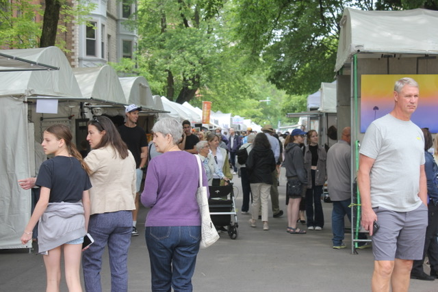

The 79th Annual 57th Street Art Fair: June 6–7, 2026
The 79th Annual 57th Street Art Fair returns June 6, 11 AM–6 PM, and Sunday, June 7, 10 AM–5 PM, featuring nearly 200 artists and thousands of original works! As the Midwest’s oldest juried art fair, this dedicated volunteer-run event is a must-visit for art lovers looking to shop, discover, and connect with artists from across the country.
Guests can browse a wide range of handmade items, including jewelry, glass, ceramics, paintings, sculptures, fiber art, leather goods, photography, and more. Enjoy live music from Buddy Guy’s Legends, family-friendly activities, and food trucks serving up delicious bites—all while chatting with artists about their creative process!
All works are juried and original, continuing the vision of founder Mary Louise Womer from 1948, with artists receiving full monetary benefit from their sales.